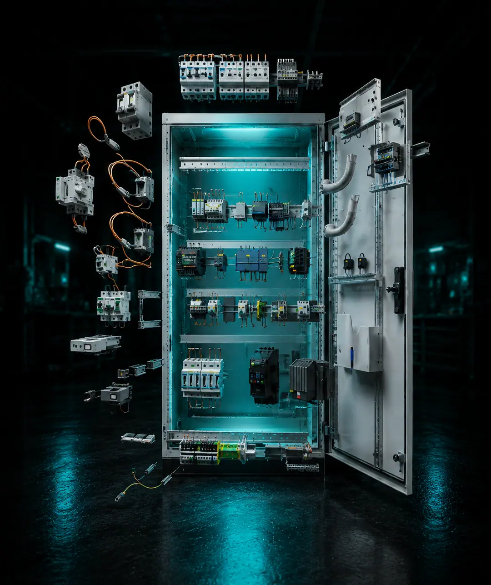
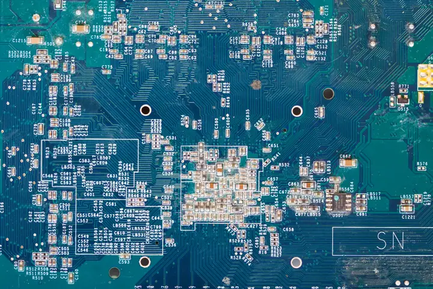

Industrijske elektroinstalacije
Industrijski elektro ormari za različita trošila i sustave. Isključivo industrijska rješenja.
Tržište Njemačka
PogledajteHranj Electrical Services
Specijalizirani smo za električne instalacije i Loxone smart home sustave.
Svako područje pokriva drugo tržište i drugu vrstu naručitelja. Uz njih se bavimo i najmom profesionalnog alata.
Industrijski elektro ormari za različita trošila i sustave. Isključivo industrijska rješenja.
Tržište Njemačka
PogledajteZavršni radovi po principu ključ u ruke. Uz njih kućne elektroinstalacije, za koje smo specijalizirani.
Tržište Hrvatska
Ovlašteni partneri firme Loxone. Prodaja komponenti i montaža sustava u Hrvatskoj.
Tržište Hrvatska
Loxone smart home i katalogNudimo usluge projektiranja, montaže i puštanja u rad svih vrsta električnih instalacija — industrijskih i kućnih.
Nacrt i proračun prilagođen zahtjevima objekta i propisima.
Izvedba na terenu, od razvoda do priključka trošila.
Provjera, mjerenja i predaja instalacije u funkciji.

Glavna djelatnost HES-a. Radimo je u Njemačkoj i isključivo kao industrijska električna rješenja.
Tržište Njemačka
Vrsta rješenja Isključivo industrijska
Naručitelj Industrija
Nudimo završne radove u građevini po principu ključ u ruke. U Hrvatskoj smo aktivni od nedavno.
Pronađite svoj posao na popisu i javite nam se s upitom.
Radimo kućne elektroinstalacije za privatne naručitelje u Hrvatskoj.

Radimo cijelu instalaciju za privatne naručitelje — od razvoda do priključka, uz Loxone kao mogućnost, ne uvjet.
Pošaljite upitProdajemo Loxone komponente i izvodimo montažu sustava u Hrvatskoj — u domovima i poslovnim prostorima.
Šesnaest artikala u četiri kategorije. Cijene su po danu, cijeli cjenik je u webshopu.
Zaposlenje
Prijave i životopise primamo kontinuirano. Otvorene su dvije pozicije, obje na industrijskim električnim instalacijama.
Provjeri ispunjavaš li uvjete.
Ispunjavaš 0 / 4
Predznanje nije potrebno.
Ispunjavaš 0 / 2
Predznanje nije potrebno. Poželjno je, ali nije obavezno — sve te naučimo.
Naša ponuda
Pošalji životopis e-poštom ili nazovi. Prijave primamo kontinuirano.
Realna cijena i dalje može značiti visoku kvalitetu
Dostupni smo e-poštom i telefonom.
Hranj electrical services d.o.o. · hes.hr